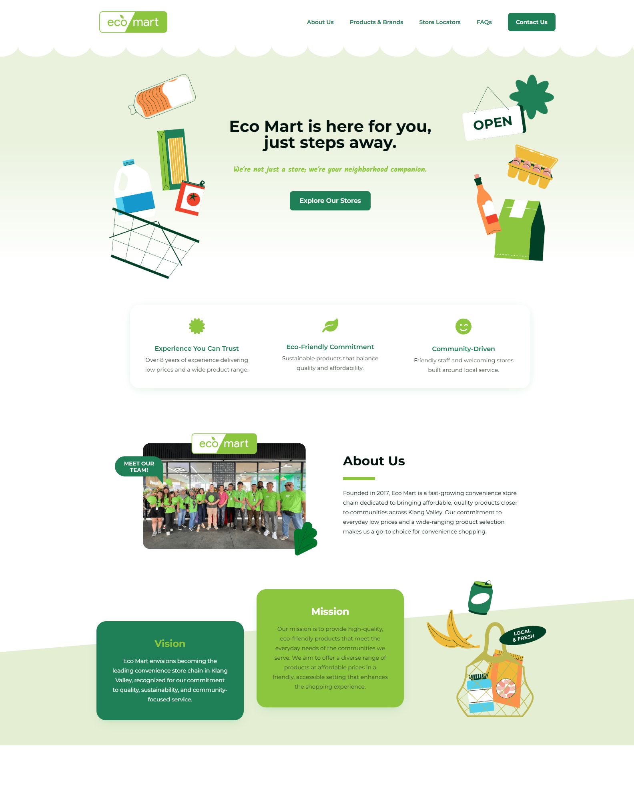
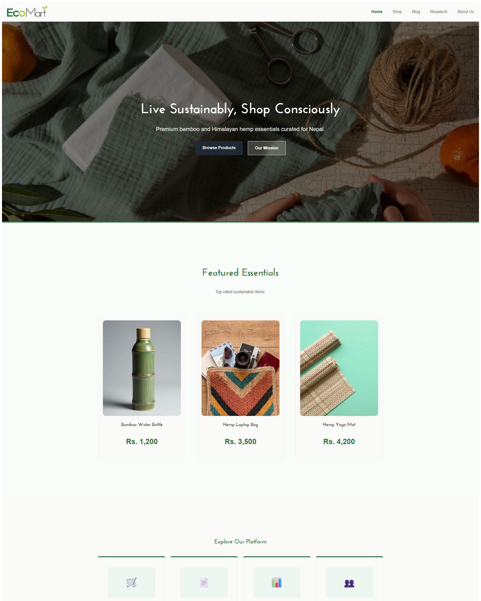
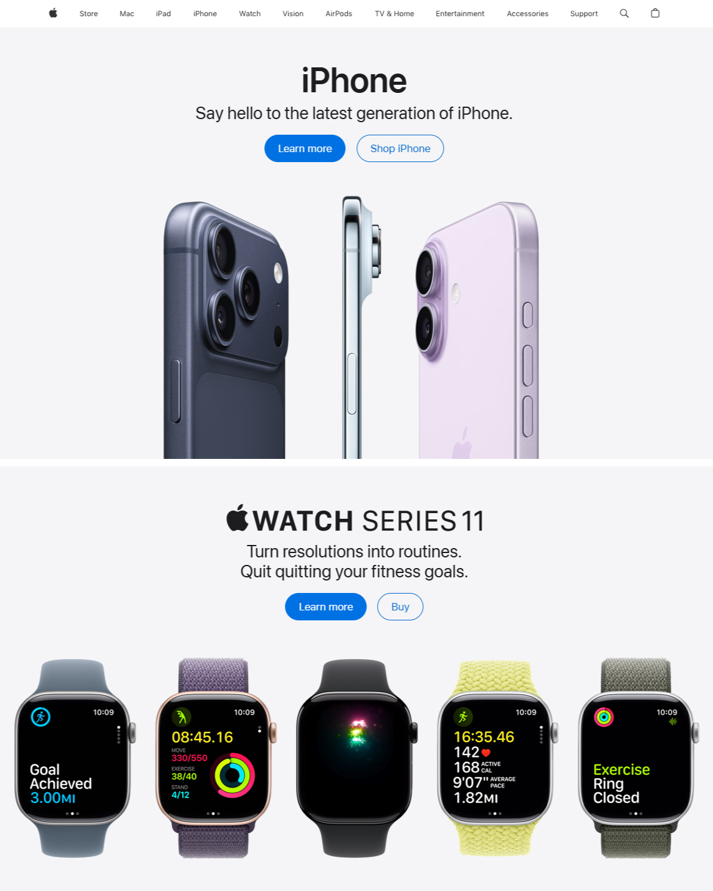
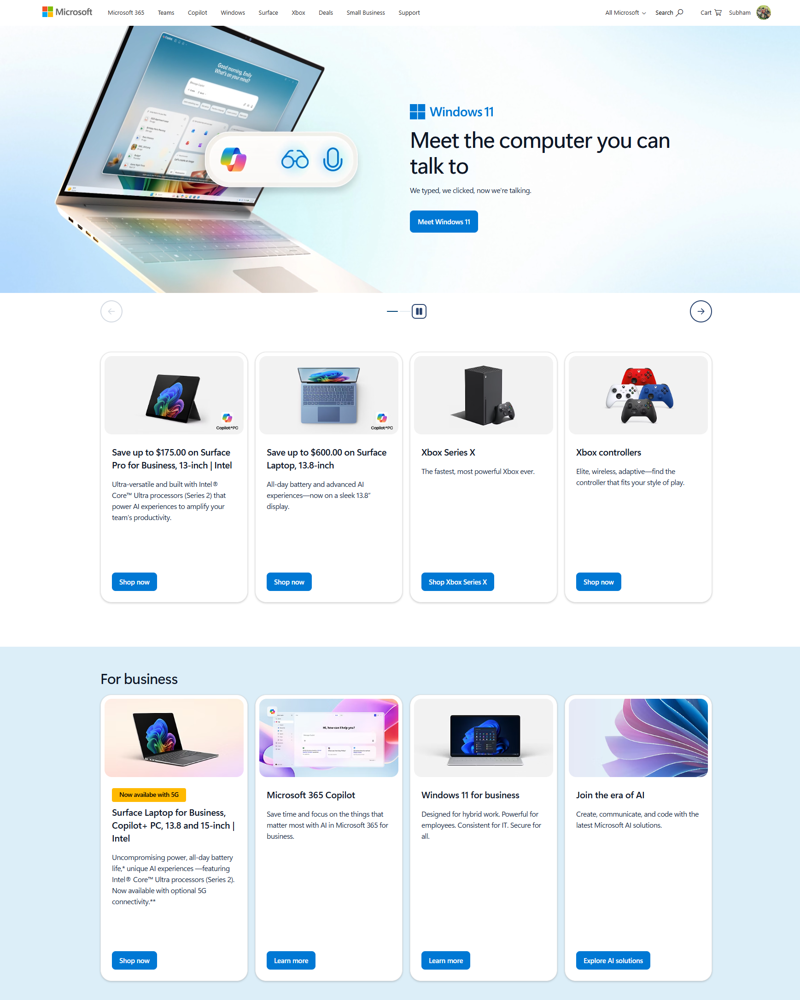
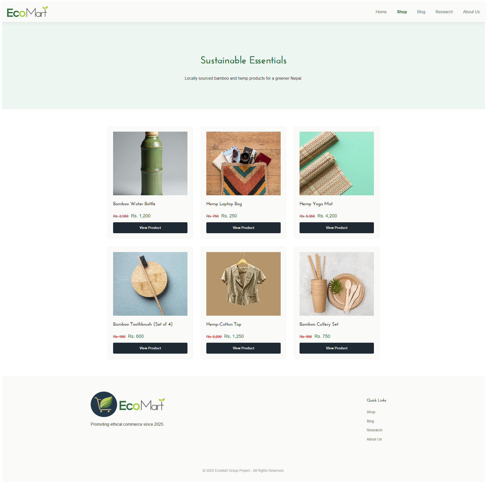
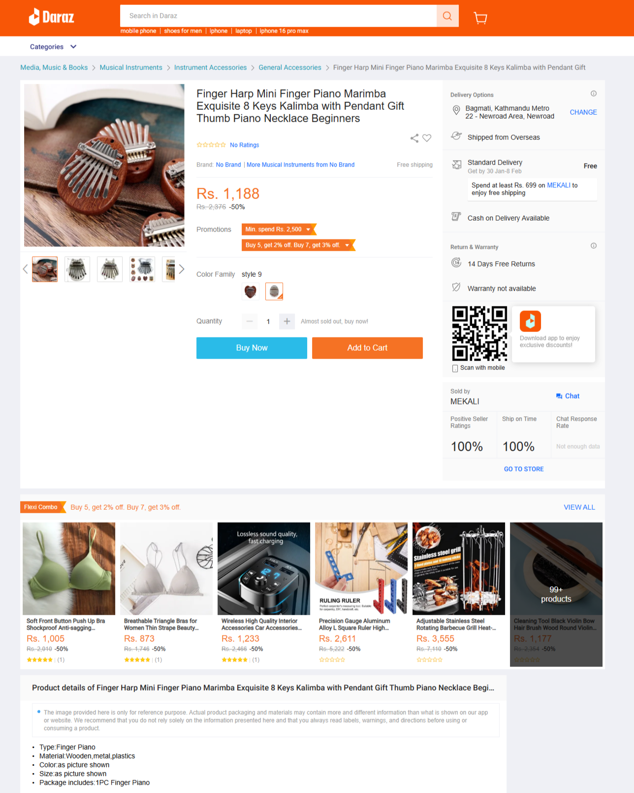
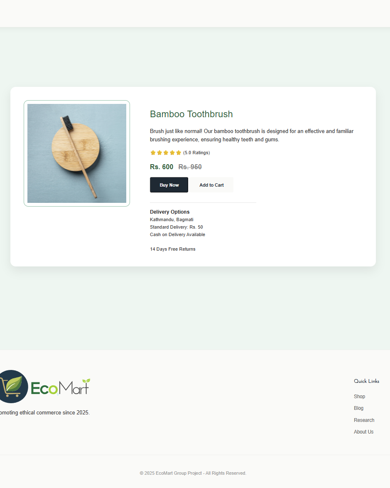

Our Research Goal
Before writing any code, we looked at how top e-commerce sites actually work. We didn't want to just copy them; we wanted to understand why they put buttons in certain places or why they chose specific colors. By looking at local sites like Daraz and global giants like Apple and Amazon, we figured out how to make EcoMart Nepal simple, clean, and easy for anyone to use.
| Site We Studied |
What We Looked At |
How We Used It |
EcoMart Malaysia
(ecomart.com.my) |
Brand Identity & Colors |
We liked their use of green to show they are eco-friendly. We kept that same "earthy" feel but made our navigation bar much simpler so users don't get lost in too many menus. |
Apple
(apple.com) |
Landing Page & Buttons |
Apple is the king of clean design. We used their style of big images and "Call to Action" buttons (like "Shop Now") so the user always knows exactly what to click next. |
Microsoft / Amazon
(microsoft.com) |
Product Card Layout |
We studied how these sites show products in a grid. We learned that the image needs to be the hero, with the price and name kept small but clear underneath to avoid cluttering the screen. |
Daraz Nepal
(daraz.com.np) |
Product Details Page |
Since Daraz is popular in Nepal, we looked at their product info layout. However, we chose to remove all the annoying ads and pop-ups that Daraz uses to give our users a more peaceful shopping experience. |
A Side-by-Side Look
The best way to see our progress is to look at our site next to the ones that inspired us. On the left is the original reference, and on the right is how we built it for EcoMart Nepal.
Learning from the Original EcoMart


The Malaysian version of EcoMart has a great reputation for sustainability. We used their green-and-white theme because it tells the user immediately that we care about the environment. Our version improves on this by using more "white space," which makes the text easier to read on mobile phones and small laptops.
Why Clean Design Matters (Apple)

Apple’s website doesn't try to show you everything at once. They focus on one big product. We did the same for our homepage. Instead of a messy list of items, we used a large "Hero" section that welcomes the user and points them directly toward the Shop page using a high-contrast button.
Making Products Easy to Browse


When you are looking through hundreds of items, you don't want to be overwhelmed by text. We took the "Product Card" idea from Microsoft and Amazon. Each card is a neat little box with rounded corners. We made sure that the "View Details" action is the most obvious part of the card, which gives a good User Experience and strips away all the clutter.
A Better Way to Shop Locally (Daraz)


Daraz is the biggest store in Nepal, but their pages can be very crowded with banners and "buy now" countdowns that stress people out. For EcoMart, we kept the useful parts, like the large product image and clear pricing—but stripped away the clutter. The result is a page that feels much more professional and is faster to load.